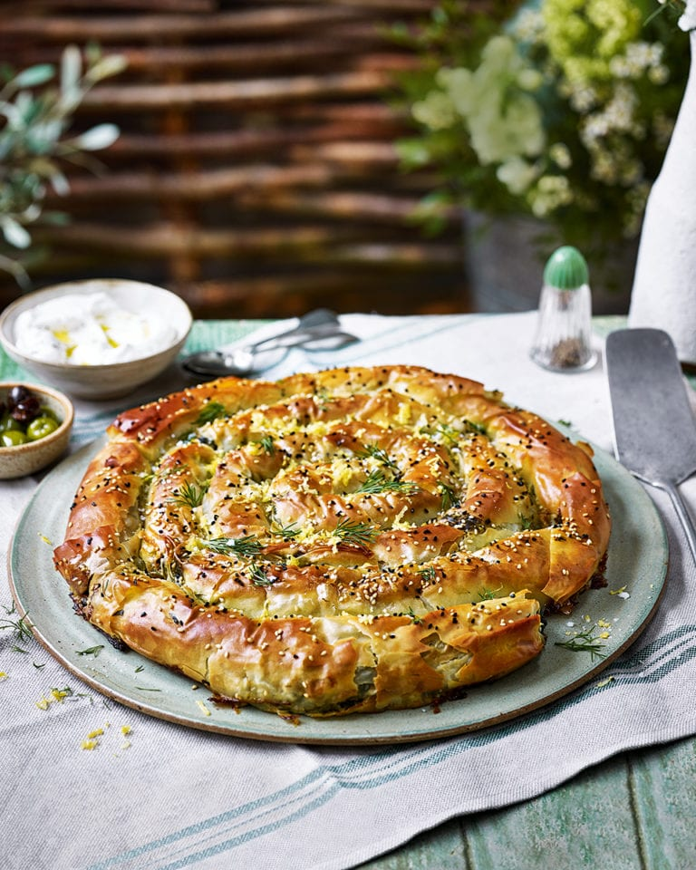

Spinach and Feta Swirl Pie

Complicated? Maybe. Worth it? Absolutely!
Inside a crisp, flaky filo pastry swirl you’ll find a moreish mix of spinach, spring onions, feta, goat’s cheese, pecorino and dill; a party centrepiece everyone will want a slice of.
This recipe is not for the faint of heart or for a simple dinner at home for two. This is a recipe that should be dedicated to special occations and celebrating with a group. enjoy!
Ingredients:
- 7 filo pastry sheets (we used a 270g pack Jus-Rol filo pastry sheets)
- 125g unsalted butter, melted
- ½ tbsp sesame seeds
- ½ tbsp nigella seeds
- For the filling:
- 5 spring onions, finely chopped
- 1 small onion, finely chopped
- Glug olive oil
- 2 x 400g bags young leaf spinach
- 300g feta cheese, crumbled
- 150g goat’s cheese, crumbled (we used Capricorn with the rind)
- 40g pecorino, grated (or vegetarian alternative)
- 3 medium free-range eggs, lightly beaten
- Bunch fresh dill, chopped, plus extra to serve
- Small bunch fresh flatleaf parsley, chopped
- 1 tsp dried mint
- Pinch chilli flakes
- Finely grated zest and juice 1 lemon
- 75g toasted pine nuts (optional)
- Nutmeg for grating
- Greek yogurt and mixed olives to serve
- Baking sheet lined with baking paper
Directions:
- Step 1: For the filling, gently fry both types of onion in a pan with a glug of olive oil and seasoning for 6-8 minutes until starting to soften. Set aside in a large mixing bowl while you prepare the spinach.
- Step 2: Wilt the spinach in batches in your largest pan with a tiny splash of water (or in their bags in the microwave, if you prefer). Drain, cool, then squeeze out any excess water in a colander using a wooden spoon. Put in a clean tea towel or muslin square and squeeze tightly to remove any remaining water. Roughly chop and put in the bowl with the onions.
- Step 3 Add all the cheeses, the eggs, fresh and dried herbs, chilli flakes, lemon juice, pine nuts (if using), a good grating of nutmeg, a little salt and plenty of black pepper, then mix thoroughly.
- Step 4 Heat the oven to 190°C/170°C fan/gas 5. Put 1 rectangular sheet of filo on a work surface, brush all over with melted butter, then top with another sheet of filo, brushing as before. Add a third of the spinach mixture in a line along one long edge, then roll up into a cylinder, brushing the filo with butter as you roll (see tip).
- Step 5 Starting from one end, wind the filo into a coil and put on the baking sheet. Repeat twice more in the same way, coiling each filo cylinder around the previous one to make a larger spiral. Brush the finished pie all over with melted butter (or use olive oil if you’ve run out), then sprinkle with the seeds. Bake for 50-60 minutes or until golden brown and cooked through.
- Step 6 Serve scattered with lemon zest and chopped dill, with bowls of yogurt and olives alongside.
Sources